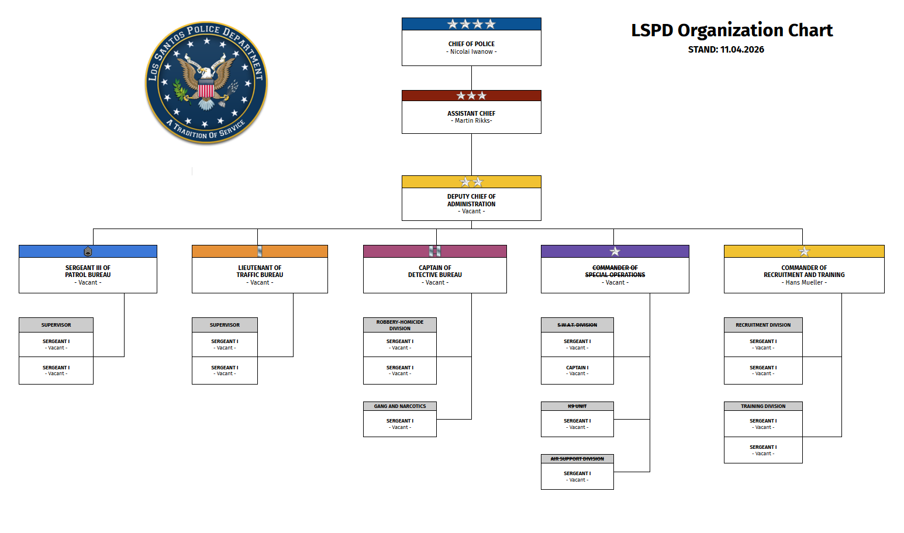

COP
Chief of Police
Gesamtleitung, strategische Richtung und finale Department-Entscheidungsebene.

Das Organigramm verbindet strategische Leitung, Bureau-Fuehrung und operative Teams. Dadurch bleiben Entscheidungswege nachvollziehbar und jede Einheit hat klar definierte Verantwortungsbereiche.
Gesamtleitung, strategische Richtung und finale Department-Entscheidungsebene.
Verbindet die strategische Spitze mit der operativen Gesamtkoordination der Stadt.
Bureau-Verantwortung, Standardsicherung und Uebersetzung strategischer Ziele in sichtbare Linienarbeit.
Schicht- und Ressourcensteuerung fuer Divisionen, Watches und operative Schwerpunktlagen.

Neben dem offiziellen Bild zeigt die Liniengrafik die Ranglogik noch einmal in reduzierter Form, damit Aufstiegswege und Fuehrungsebenen schneller lesbar bleiben.
Gesamtleitung des Departments, strategische Ausrichtung und finale Entscheidungsinstanz.
Direkte Entlastung des Chiefs und operative Gesamtkoordination ueber mehrere Bureau-Strukturen.
Fuehrt einzelne Grossbereiche und uebersetzt die Department-Strategie in konkrete Standards.
Steuert Divisionen und groessere Sonderbereiche zwischen Bureau-Fuehrung und Tagesbetrieb.
Verantwortlich fuer Schichtlagen, Ressourcenplanung und Fuehrung mehrerer Einheiten.
Fuehrt Teilbereiche im Tagesdienst und koordiniert Eskalationen, Lagemeldungen und Schichtablauf.
Direkte Teamfuehrung, Ausbildung im Dienst und Kontrolle von Standards auf Streife und in Einsaetzen.
Ermittlungen, Fallbearbeitung und enge Zusammenarbeit mit Patrol und Spezialbereichen.
Sichtbare Einsatzbasis des LSPD in Verkehr, Streife, Erstlage und taeglicher City-Police-Arbeit.
Begleitete Probezeit im aktiven Dienst mit enger Rueckmeldung und Leistungsbewertung.
Einstiegsstufe fuer Academy, Grundlagenrecht, Funkdisziplin und erste Department-Standards.
Chief of Police, Assistant Chief und Deputy Chiefs setzen strategische Ziele und verantworten die Gesamtleitung.
Commanders, Captains und Lieutenants fuehren Bureau-Teams, planen Schichten und koordinieren Lagen.
Sergeants leiten Teams im Tagesdienst, sichern Standards und begleiten Ausbildung und Nachbereitung.
Detectives, Officers, Probationary Officers und Recruits bilden die sichtbare Einsatzbasis des Departments.
Erste Reaktion, sichtbare Praesenz und die operative Basis fast aller City-Lagen.
Verkehrsraumkontrolle, Unfalllagen und praeventive Eingriffe auf kritischen Routen.
Ermittlungslogik, Falllinien und die belastbare Auswertung komplexer Delikte.
Taktische Zuspitzung, Hochrisikolagen und kontrollierte Zugriffsfuehrung.
Academy, Standards, Feldbegleitung und die Entwicklung neuer Officers.
Die verbindende Linie zwischen Bureau-Logik, Watches und strategischer Gesamtfuehrung.